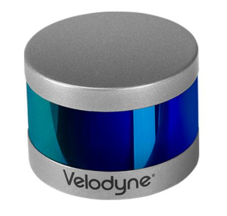
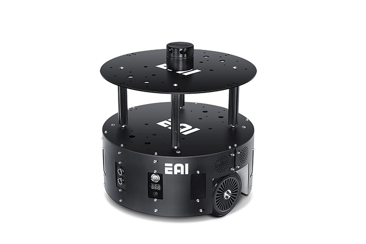
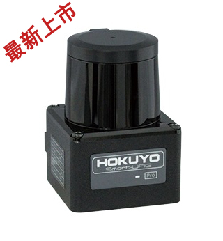

V2Tlab 隶属于武汉理工大学能动学院，实验室具有良好的科研环境，具备完善的实验器材。实验室目前发表文章多达10086份，在ITS中心有着强力的竞争力

实验室研究方向
- 视觉slamSLAM是“Simultaneous Localization And Mapping”的缩写，可译为同步定位与建图。概率 SLAM 问题 (the probabilistic SLAM problem) 起源于 1986 年的IEEE Robotics and Automation Conference 大会上，研究人员希望能将估计理论方法 (estimation-theoretic methods) 应用在构图和定位问题中。 SLAM最早被被应用在机器人领域， 其目标是在没有任何先验知识的情况下，根据传感器数据实时构建周围环境地图，同时根据这个地图推测自身的定位
- 语义工作对于自动驾驶而言，语义信息是指那些能让无人车更好地理解行车规则、感知路面交通状况、规划行车路线，且被涵盖在高精度地图里的多层次、富维度的信息。 相对于典型的点云地图而言，语义地图能够很好的表示出无人车到的地方是什么，无人车“看”到的东西是什么。比如当无人车进入一条马路，点云地图中，无人车并不能识别显示出来的一块块的点云到底是什么。 但是语义地图的构建可以分辨出马路中的车道、汽车、隔离带、路边树木、指示牌、蓝天等诸多不同对象及概念。
- 激光点云配准
点云配准是计算机视觉的热门研究方向，目前对于刚性点云配准的研究比较全面，对于非刚性点云配准算法的研究相对较弱，总体上来说，ICP、卡尔曼滤波等见到的比较多。
ICP
迭代最近点算法（Iterative Closest Point，简称ICP算法）， 其 Paul J.Bed 和 Neil D. Mckay 提出。由于它简单且计算复杂度度低，使它成为最受欢迎的刚性点云配准方法。 ICP算法以最近距离标准为基础迭代地分配对应关系，并且获得关于两个点云的刚性变换最小二乘。然后重新决定对应关系并继续迭代知道到达最小值。目前有很多点云配追算法都是基于ICP的改进或者变形，主要 改进了点云选择、配准到最小控制策略算法的各个阶段。ICP算法虽然因为简单而被广泛应用。但是它易于陷入局部最大值。ICP算法严重依赖初始配准位置，它要求两个点云的初始位置必须足够近，并且当存在噪声点、外点时可能导致配准失败。KC
Tsin和Kanade应用核密度估计，将点云表示成概率密度，提出了核心相关（Kernel Correlation，简称KC）算法。这种计算最优配准的方法通过设置两个点云间的相 似度测量来减小它们的距离。对全局目标函数执行最优化算法，使目标函数值减小到收敛域。因为一个点云中的点必须和另一个点云中的所有点进行比较，所以这种方法的算法复杂度很高。RPM
为了克服ICP算法对初始位置的局限性，基于概率论的方法被研究出来。Gold提出了鲁棒点匹配（Robust Point Matching，简称RPM）算法，以及其改进算法。这种方法应用了退货算法 减小穷举搜索时间。RPM算法既可以用于刚性配准，也可以用于非刚性配准。对于RPM算法，在存在噪声点或者某些结构缺失时，配准可能失败。形状描述符配准
形状描述符的点云配准框架，这类配准方法在初始位置很差的情况下也能大体上很好的实现配准。它配准的前提是假设了一个点云密度，在没有这个特殊假设的情况下， 如果将一个系数的点云匹配到一个稠密的点云，这种匹配方法将失败。UPF/UKF
Ma和Ellis首先提出了使用U-粒子滤波（Unscented Particle Filter，简称UPF）的点云配准算法。尽管这种算法能够精确的配准较小的数 据集，但是它需要大量的粒子来实现精确配准。由于存在巨大的计算复杂度，这种方法不能用于大型点云数据的配准。为了解决这个问题，U-卡尔曼滤波（Unscented Kalman Filter，简称UKF） 算法被提出来了，这种方法收到了状态向量是单峰假设的限制，因此，对于多峰分布的情况，这种方法会配准失败。GMM配准
GMM配准是基于高斯混合模型的配准方法，此方法将点云按照高斯混合模型进行建模，并对模型之间计算L2距离来对比相似度，并不断迭代优化旋转平移矩阵RT，计算得到最优解来实现配准。 - 激光点云定位 利用激光雷达可以通过点云匹配来给车给汽车进行定位，该方法来自于激光雷达传感器的检测数据与预先存在的高精度地图连续匹配，通过这种匹配可以获得汽车在高精度地图上的全球位置及行驶方向。
- 点云拼接 将已经配准的点云进行叠加实现拼接的功能，点云拼接是实现地图构建的关键，如何高效且准确地将点云进行拼接直接影响到高精度地图的构建。高精度地图也是能实现高精度定位以及保证自动驾驶安全性的重要因素。
- 固态激光雷达研究 目前机械激光雷达存在这易损坏的缺点，而且分辨率也较低，最近固态激光雷达逐渐进入大众视野，固态激光雷达凭借其成本仅为机械激光雷达10%的优势，以及较高的分辨率的特点逐渐进入大家的视野。 然而，由于固态激光雷达的视场较小，且相对来说更加密集，因此以前用于机械式的激光雷达算法，诸如loam或者hdl等的方法逐渐不适用了，因此对于固态激光雷达的研究正如火如荼地展开。
- 室内定位 室内由于缺乏gps信号，对于室内定位目前基本上是根据wifi、蓝牙技术、红外、射频、zigbee以及超声波等设备实现的，然而这些定位都不能实现比较高的精度。基于此本实验室考虑将激光雷达和wifi定位进行融合，大大提高了定位的精度。
- 融合定位 目前，在智能汽车领域，设备（汽车）配备有非常多类型和数目的传感器，诸如加速度计，GPS，RGB—D和激光雷达等等，如果各设备之间只是独立运行，便无法达到对于设备的最大化使用，并且考虑到定位的精度，各个传感器之间数据进行 融合是非常必要的，这其中，算法是多传感器融合定位的核心，而目前主要有两大类融合算法:随机类和人工智能类。本实验室在原始的概率和滤波算法的基础上，再借助人工智能的帮助，实现了数据的高效融合，并实现了高精度的定位。
实验室资源
| 设备 | 个数 |
|---|---|
| Velodyne 16线激光雷达VLP-16  | 10086 |
| Eaibot小车  | 1 |
| HOKUYO激光扫描测距仪器  | 2 |
| 其他 | 10086 |
实验室成果展示
- Yicheng Li, Hu Zhaozheng*, et al, "Multi-scale Site Matching for Vision-only Self-localization of Intelligent Vehicles", IEEE Intelligent Transportation Systems Magazine, 2017 (IF=3.65)
- Hu Zhaozheng*, Yicheng Li, Na Li, and Bin Zhao, "Extrinsic Calibration of 2D Laser Rangefinder and Camera from Single-Shot based on Minimal Solution", IEEE Trans on Instrumentation and Measurement, vol. 64, no. 4, pp. 915-929, Apr., 2016 (IF=1.81)
- Hu Zhaozheng*, “Intelligent Road Sign Inventory (IRSI) with Image Recognition and Attribute Computation from Video Log”, Computer-Aided Civil and Infrastructure Engineering, vol. 28, no. 2, 2013, pp. 130-145 (IF=5.63)
- Hu Zhaozheng, James Tsai, “Homography-based Vision Algorithm for Traffic Sign Attribute Computation”, Computer-Aided Civil and Infrastructure Engineering, vol. 24, no.6, 2009, pp. 385-400 (IF=5.63)
- Hu Zhaozheng*, Zheng Tan, “Depth Recovery and Affine Reconstruction under Camera Pure Translation”, Pattern Recognition, vol.40, no.10, 2007, pp. 2826-2836 (IF=3.10)